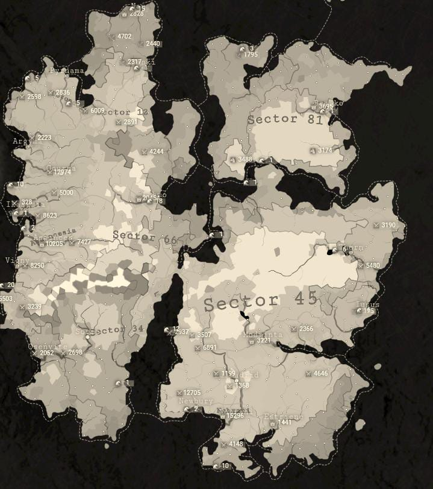
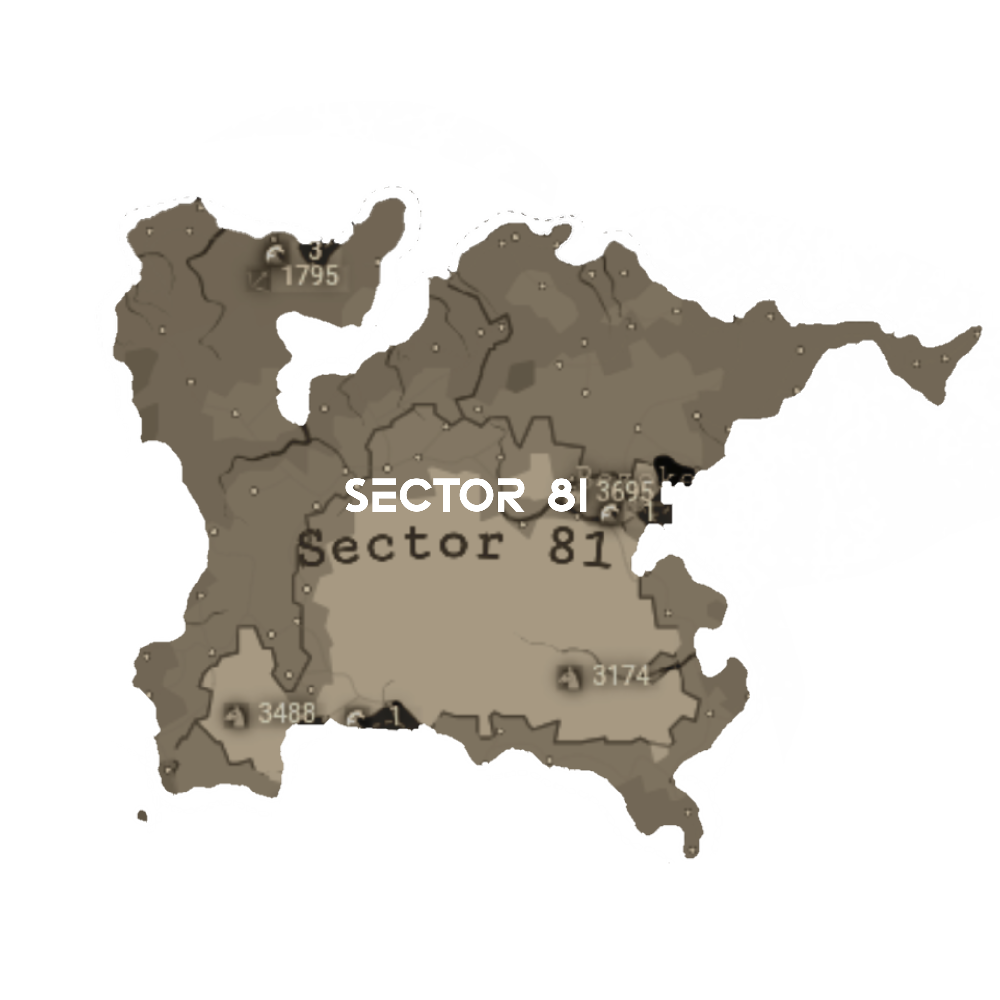
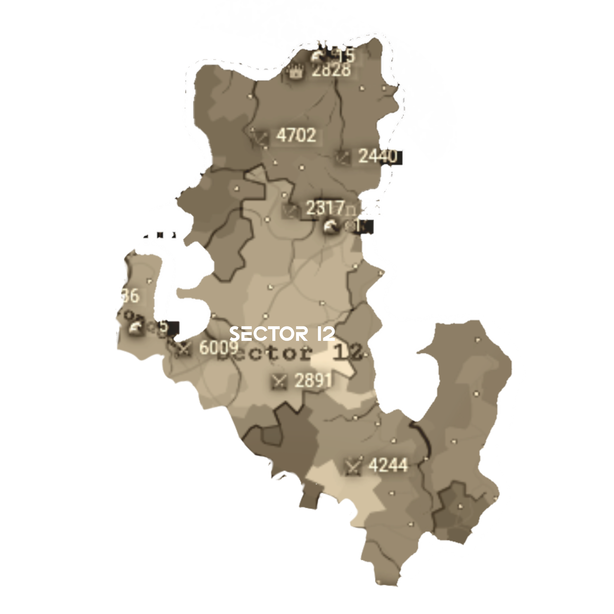

MAP and LORE
LORE
Kehancuran manusia didukung oleh suatu wabah yang membuat mereka harus berpindah-pindah ke tiap-tiap planet demi keberlangsungan hidup. Bumi sudah tidak bisa menampung dan sumberdaya alam semakin lama semakin berkurang. Manusia akhirnya memutuskan untuk berpindah dengan mengembangkan sebuah pesawat luar angkasa. Di tengah gempar nya bumi yang kian hari semakin rusak, Prof. Dr. Willson Gustavo mengembangkan sebuah mesin waktu untuk mendukung perjalanan ruang angkasa para manusia. Hari yang di tunggu akhirnya tiba. Dengan penemuan mesin waktu dan Kapal Luar Angkasa yang selesai, manusia pun berhasil untuk meneliti planet demi hidup, Namun sebuah kesalahan sistem terjadi pada mesin waktu Prof.Willson yang membuat mereka malah masuk ke dunia Alternatif. Dalam perjalanan nya mereka bertemu sebuah planet yang mirip dengan Bumi bernama Valtoros-002. Setelah 3 tahun meneliti Valtoros-002 para manusia akhirnya tinggal sambil mengembangkan teknologi mereka di planet tersebut.
Tingkat kejahatan dari tiap-tiap wilayah meningkat setelah data analitik keamanan negara dibobol oleh beberapa orang dari Sector 81. Tidak hanya sistem keamanan namun data pemerintahan juga hampir diretas oleh seseorang. Berita ini gempar di segala wilayah. Sampai-sampai Ir. Joseph Stalin mulai turun tangan dalam koverensi Crime Eradication Alliance ( CEA ) dan mengusulkan agar adanya perusahaan pertahanan sekaligus pengembangan lanjutan untuk keamanan wilayah. Akhirnya pada 14 April, Di kesahkan nya sebuah perusahaan yang bekerja secara Internal-Eksternal untuk wilayah. Hal ini didukung oleh Prof. Dr. Victor Waltzson pengembang sistem keamanan serta persenjataan militer negara. Ir. Josep Stelin menunjuk Commander Declan Giovanni sebagai pengurus dari perusahaan tersebut dan perusahaan ini bernama Deluxe Company.
MAP

Name planet: Valtoros-002
Short info about planet: Valtoros merupakan sebuah planet yang memiliki sumberdaya alam dan oksigen sebanyak bumi.
• Sector 66

Sebuah sektor utama dalam pengembangan teknologi dan sebagai pusat kota setelah para manusia menginjakkan kaki mereka disana.
• Sector 45

Sebuah sektor yang dekat dengan tanah yang subur serta sumber daya alam yang unggul. Setelah manusia mengembangkan sebuah mesin kereta, mereka menggunakannya sebagai alat transportasi dan ekspor impor antara sektor lainnya.
• Sector 81 
Wilayah ini sebelumnya digunakan sebagai laboratorium negara namun karena sudah lama tidak di gunakan akhirnya beralih fungsi sebagai sebuah wilayah hiburan, ditambah karena sistem keamanan yang rendah akhirnya wilayah ini disebut Kota Kriminal. Dimana para Kriminal, mafia dan penjahat beraksi.
• Sector 34

Wilayah dengan mencangkup sumber daya laut yang sangat melimpah. Hal ini dikarenakan wilayah ini berdekatan dengan Laut Eteros (sebuah laut luas didekat sektor 34).
• Sector 12 
Sebuah wilayah yang paling aman karena jauh dari sektor 81 dan berdekatan dengan pusat. Hal ini juga menjadi dasar mengapa banyak orang yang membangun permukiman di wilayah ini.